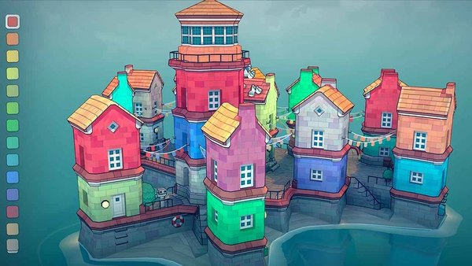
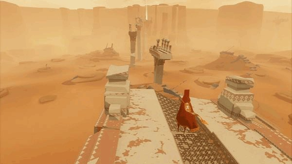
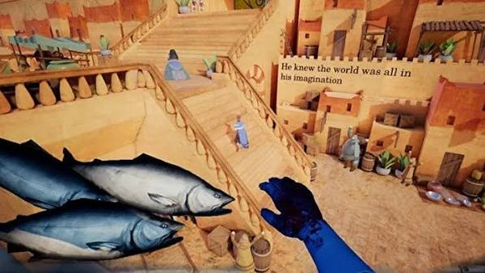
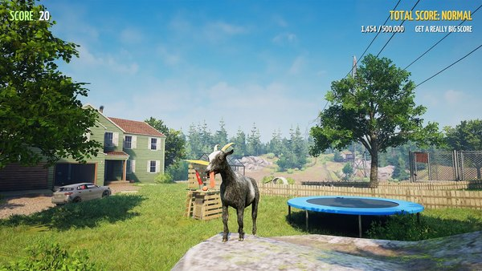
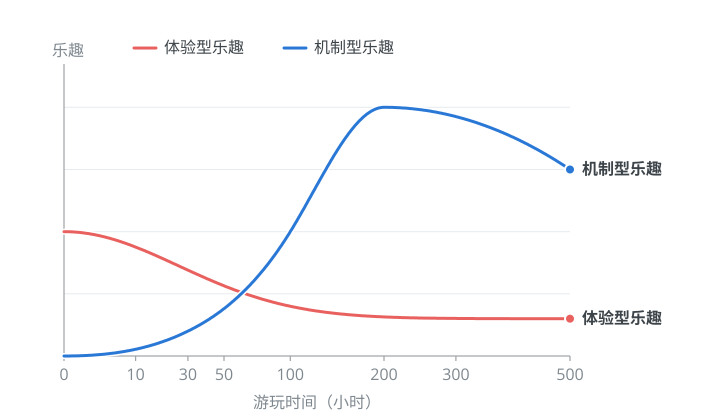
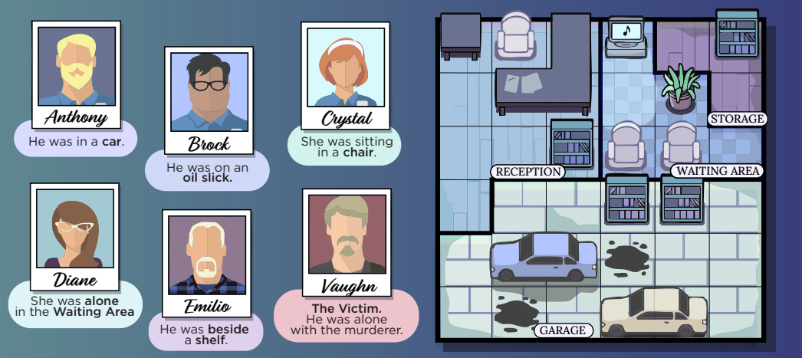
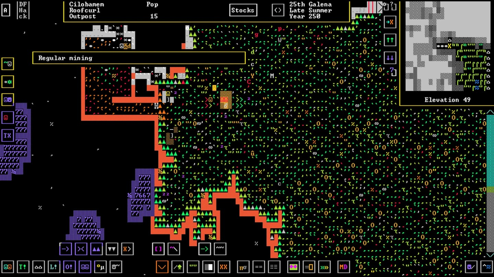
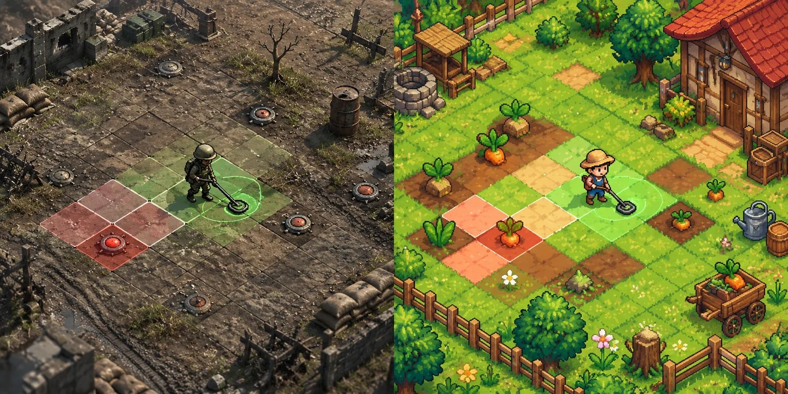

这篇文章阅读大约需要12分钟。
本文讲的是我的游戏玩法设计理念。我运用它们设计让人们觉得有趣的游戏。我也正在制作一款独立游戏《海盗与资本主义》，下面这些想法，也是我做游戏设计时思考和取舍的依据。文中展示了一些我的理念和观点，并结合具体的游戏案例来阐述。
学习与运用理论
在讨论游戏应该如何设计才能好玩之前，我们需要先弄清楚游戏为什么会让人觉得好玩。很显然，游戏是一个产品，在玩家游玩时提供特定的乐趣。也许人们脑海里会浮现下面这些乐趣：
| 常见乐趣 | 玩家感受到的东西 |
|---|---|
| 探索乐趣 | 发现未知的事物 |
| 解谜乐趣 | 理解隐藏的规律 |
| 挑战乐趣 | 克服原本无法克服的困难 |
| 成长乐趣 | 自己变得更加熟练与强大 |
| 策略乐趣 | 通过推理找到更优的解决方案 |
| 创造乐趣 | 在规则之内构造新的东西 |
| 秩序乐趣 | 制造井然有序的系统 |
| 操作乐趣 | 精确、流畅地执行动作 |
上面的乐趣显然是容易理解的，但是都列出来已经显得足够繁琐了。我在这里想提出一个自己的理解，尝试用一条简短的规则，解释上述这些乐趣的来源。我把它叫做“学习与运用理论”，其内容如下：游戏的核心乐趣源于对游戏规律的学习与运用。玩家通过探索进而认识规律，通过实践掌握规律，并通过运用规律实现目标、创造结果，从中获得满足感。
以MOBA游戏为例，游戏的目标是要推掉敌方水晶，游戏的大体规律在于：野怪、人头和兵线会提供资源让你变得更强，击杀敌人可以抑制对面的发育，推掉水晶前需要推掉防御塔。所以玩家的核心乐趣在于，认识理解如何能高效获取资源，高效地和对面对抗，最终运用学习到的规律，推掉敌方水晶。
用这个理论来看，上面这些乐趣都能找到各自的来源。探索乐趣源于对规律的探索发现，解谜乐趣源于对规律的识别和理解，秩序乐趣源于对规律和规律产物的整理。创造乐趣源于在实践中识别与掌握游戏规律。挑战、成长、策略、操作乐趣等，则来源于运用习得的规律达成目标。
我想，从进化心理学的角度来看，人类对学习与运用的偏好可能源于长期的自然选择。在漫长的进化岁月里，我们的祖先如果能够通过猿猴大脑探索发现环境规律，并利用其来预测和应对外部世界，那么他们会具有更强的生存与繁衍优势。因此，人类可能逐渐演化形成了对探索、学习和能力掌握的偏好，并从中获得满足感。这种机制持续地鼓励我们学习运用科学知识、探索宇宙，同时也让我们享受电子游戏。
一些反驳的声音
有些读者可能已经坐不住了，并且暗自想“他说的不对，我能想出来几十个反例，那些反例游戏并没有包含什么游戏规律，但仍然有大把的受众”。的确如此，让我想想，我能想到的反例有以下一些：




总览这些游戏，它们都是通过情感上以及感官上的体验来带给人愉悦感。这些体验包括：听到悦耳的声音和音乐，看到优美的景色，看到爆炸、飞天等大场面，看到一个有意思的故事等等。
好吧，我要羞愧地承认，我的“学习与运用理论”并不能解释所有游戏的乐趣。我想应该将游戏乐趣分成两个类型：机制型乐趣，体验型乐趣。前者的乐趣在于对机制的学习与运用。后者则涵盖大部分情感上感官上的体验。
两种乐趣支撑着游玩时间
两种乐趣各有各的特点。机制型乐趣见效慢，但持续久；体验型乐趣见效快，但持续短。机制型乐趣需要玩家首先发现机制，学习机制，然后才能在运用中逐渐感受到乐趣，因此需要一定前置时间来生效。但是一旦其生效后，玩家就可以在机制的约束下自娱自乐，自己创造目标自己解决，因此持续时间也长得多。反之，体验型乐趣源于玩家的情感和感官体验，玩家可以毫无门槛地获取乐趣，但是问题在于体验型乐趣的可重复游玩性很低，如果相同的景色再看一遍，相同的故事再听一遍，玩家会很快感到无聊。

在宣发阶段以及早期用户留存过程中，体验型乐趣占据主导地位。这需要游戏有一个令人兴奋的题材，出色的画面和音效。此外，一个庞大的社区和良好的口碑也能参与到新用户获取和留存中。作为例子，侦探数独游戏《Murdoku》就很好地利用了体验型乐趣吸引玩家入坑，如下图所示，《Murdoku》将数独游戏的内核包装成了一个侦探过程。玩家需要对照嫌疑人线索和格子地图找到正确的嫌疑人位置。这种侦探背景设定和画面无疑让它相比数独更容易吸引新玩家。

在用户深度游玩以及核心玩家社区建立的过程中，机制型乐趣会发挥主要作用。游戏的机制越有深度，越能够支撑玩家探索更长时间，同时也会激发玩家之间互相交流经验和构筑。一个很矛盾的地方在于，对于大多数买断制单机游戏，我们并没有任何义务让游戏能够被长时间游玩，因为玩家只在购买游戏的一瞬间付费，而并不为后续的游玩时间付费。从功利的角度看，一个机制有深度，可游玩时间长的游戏可能带来以下三个好处：
- 庞大的游戏社区。机制越有深度，越有利于社区的形成。玩家社区是天然的游戏传播因素。他们可以制作梗图，剪辑视频，邀请朋友一起玩。因此能够增大游戏影响力，以及带来大量新玩家。
- 游戏mod的产生。有深度的机制，天然就是孕育游戏mod的温床。mod的发布能够进一步让游戏的游玩价值提高，并给游戏创作带来灵感。
- 卖DLC，卖二代，卖音轨等。游戏的可游玩时间越长，玩家付费意愿越高，可以针对核心玩家做阶梯式收费。
现代游戏通常两者兼有。从一个游戏设计的角度，我们应该使用画面、音效和剧情带给新玩家体验型乐趣，让玩家先沉迷于游戏世界，然后在这个过程中引导玩家逐步学习机制，运用机制，从而享受机制型乐趣。不过这也要看游戏设计之初的预计玩家游玩时间。如果时间很短，我们完全可以只用体验型乐趣填满整个游戏体验（就像10小时游玩时间的《底特律变人》）。反之如果一个游戏的预计游玩时间很长，那也完全可以放弃掉大部分感官体验，用良好的口碑吸引玩家入坑，让玩家自己说服自己忍受前期糟糕的游玩体验，一直支撑到机制型乐趣的到来（就像《矮人要塞》《CDDA大灾变》《Space Station 14》一样）。有趣的是对于后一种游戏，总有后来者愿意制作更精美的画面以及简化游戏机制，来尝试扩大市场，他们中也不乏成功者（《环世界》之于《矮人要塞》，《僵尸毁灭工程》之于《CDDA大灾变》）。

专注于内核而不是形式
我所谓的形式就是指游戏的题材，游戏的表象，而游戏的内核则应该是抽离了所有音画和故事之后剩下的那种东西。游戏的形式提供了体验型乐趣，而游戏的内核提供了机制型乐趣。举个例子，我们现在做一款排雷游戏，游戏内容就是在地图上用各种工具寻找地雷，如果挖出来地雷就加分，如果踩到就会死掉。这个游戏的题材可以说是战争题材，表象是对地雷的寻找，但是其内核是通过某种探针获取信息，分析信息，最终运用信息定位一个目标。
如果另一款游戏是拔萝卜游戏，在那里你需要用各种工具寻找萝卜，如果挖出来萝卜就加分，如果踩坏萝卜就扣分。显而易见，这两个游戏的形式大相径庭，听起来排雷更加紧张刺激，而拔萝卜则是像一个休闲农场游戏，但是我们也可以发现二者的内核完全一样。甚至前者更换一下贴图和音效就可以变成后者。作为游戏设计师，应该有能力拨云见日，从游戏的表象中抽离出来，对内核直接进行分析。
再看拔萝卜游戏，我们应该将找萝卜的工具抽象为一种信息获取途径，例如一种工具提供附近萝卜的模糊位置，另一种工具提供面前的精确位置是否有萝卜，第三种工具提供附近萝卜的精确位置，但是可能有漏报误报。这样这些工具就能够提供足够的信息以供玩家进行决策。如果掉入了形式的陷阱，我们就不会去分析这种内核，而是开始联想到现实世界中的工具，包括铁锹、手套、小铲子等等。

游戏的形式和内核可以是毫不相关的，就像一部电影的题材和表达可以毫不相关一样。一部战争题材的电影可以是一部爱情片，也可以是喜剧片，还可以是政治片；一部科幻题材的电影同样可以是一部爱情片（我没有任何诋毁《星际穿越》的意思）、一部喜剧片，或者一部真正推演科学设想的硬科幻。因为题材本身只是作为背景板出现在故事里，而表达则关乎电影要带给观众什么样的感受。在现实生活中，我们却经常看到人们把电影的题材和表达混为一谈。这造成的糟糕结果就是：你满心欢喜地点开了一部高分科幻片，想要看到精巧的世界设计和逻辑推演，实际上却只看到一些说着英语的皮套外星人。
游戏也是一样的道理。很多玩家其实并不清楚自己喜欢的是哪一类游戏：他们以为自己喜欢的是三国、末日或者战争题材，但真正让他们玩上几百个小时的，往往是题材背后的内核，比如资源管理、策略、动作等。题材负责把玩家吸引进来，内核则负责把玩家留下来。作为设计师，我们更要把这两者分清楚。
不要掉入游戏形式的陷阱
游戏设计师很容易掉入形式的陷阱。大多数的游戏设计师都是地球上的智人，因此他们的思维方式也理所应当受到了地球环境以及智人生活环境的污染。他们设计游戏的时候也难免开始思考，这符合现实吗，有什么现实中存在的东西可以供我借鉴。但如果站在游戏设计的角度看，现实世界其实有着糟糕透顶的“游戏设计”，我可以举出一百条例证，包括“没有匹配机制，你可以轻松在篮球场遇到青训队员”，包括“死亡惩罚过高，导致玩家不敢承担风险进行探索”，包括“明明是三维空间，但是用重力把玩家锁在地上，强行降级成二维生物”，包括“构筑极度不平衡，某种职业过强，某种职业过弱，版本更新毫无逻辑”，包括“越弱的情况资源获取越困难，强者恒强”等等。由于篇幅有限，我就不一一列举了。但是很显然，玩家选择游玩你的游戏，原因不会是“这个游戏和现实比较像，唯独就是画面更糟糕，帧数更低了”。
游戏设计师容易掉入的第二个形式的陷阱，就是无意识模仿前辈的游戏设计。设计师们往往不是从零开始做设计的，而是在现实或者前人作品的基础上做改进。在这个改进的过程中，前人作品的某些特性（feature）往往会在不知不觉中被保留下来，尽管它们可能已经不适合当前的环境。
以耳熟能详的MOBA游戏为例，其中的资源分为金币和经验，这种设计从上古时期的《龙与地下城》，一直传承到今天的《王者荣耀》。我想要质疑的是，对于《王者荣耀》乃至当今的MOBA游戏，为什么要设计金币和经验这样的双轨制资源系统。我们都清楚，设计一个双轨制的系统，目的应该是给玩家两种不同的选择。也就是说在《王者荣耀》里，理论上应该存在优先获取金币、优先获取经验两种不同的发展路径。但是我在实际的游戏中没看到这样的设计。大量的资源都是同时提供金币和经验，如果是这样的话，为什么不直接将两个资源合并成一种呢？当今的MOBA游戏设计有多少是出于对机制的思考，有多少是出于对前人的继承呢？
下面是这种双资源设计的演变脉络：
这个想法并不是我的原创，而是来自Valve的游戏《Deadlock》。在其中，游戏设计师将金币和等级合并成了一种叫“魂魄”的资源。而该游戏的实际游玩体验和我玩过的其他MOBA游戏并没有太多不同。因此我们在设计游戏的时候一定要小心加谨慎，对于任何一个设计决定，都要说出这样设计的理由。
如何避免掉入形式的陷阱呢，其实很简单，就是要不断反思我们设计的游戏，着重注意其形式与现实世界或者与前人作品相似的部分。因为如果这种相似出现了，那就有可能是因为我们照搬了现实世界的现象或者前人的作品。我们一定要对其加以小心，反思的过程中要大胆质疑，刨根问底。比如，如果我是《CS2》的游戏设计师，我会询问：“为什么枪械需要换子弹？”一种错误的回答是“因为现实中的枪械需要换子弹”；另一种错误的回答是“因为过去的射击游戏都需要换弹”；而更接近内核的回答是“因为换子弹这个设定会禁止开火、暴露声音，从而引导玩家做弹药管理，惩罚泼水射击”。这种思维方式提示我们可以通过调整换弹时间和声音大小来加大或者减弱惩罚。而当Valve的设计师发现“玩家换弹的决策代价还是太低，只要有安全时间，玩家几乎总是把弹匣补满”的时候，他们进一步增加了设定“换弹会抛弃现有弹匣的子弹”来进一步惩罚随意的换弹。我们当然不必追问为什么警匪不把抛弃的弹匣收集起来，因为这种所谓的抛弃弹匣的说辞只是一个形式，一个皮囊，这个形式只是借用现实规则方便大家理解，但实际上服务于换弹惩罚这个内核。
我没有丝毫贬低游戏表面形式，以及体验型乐趣的意思。它们对于我们这些感性的灵长类来说非常重要。我文章中的意思是说，作为游戏设计师，应该是率先构建游戏的机制，然后在这个机制的骨架上搭建一个皮囊。任何一种背景设定都只是一种说辞，方便玩家更好地理解游戏机制。在这一点上，这些MOBA游戏做得倒是很好。我们都知道没人真正在乎MOBA游戏的背景设定，什么这个城市，那个种族的，大家只是想选个英雄开一局大杀四方，而这个背景设定是次要的，只是玩家茶余饭后的谈资。